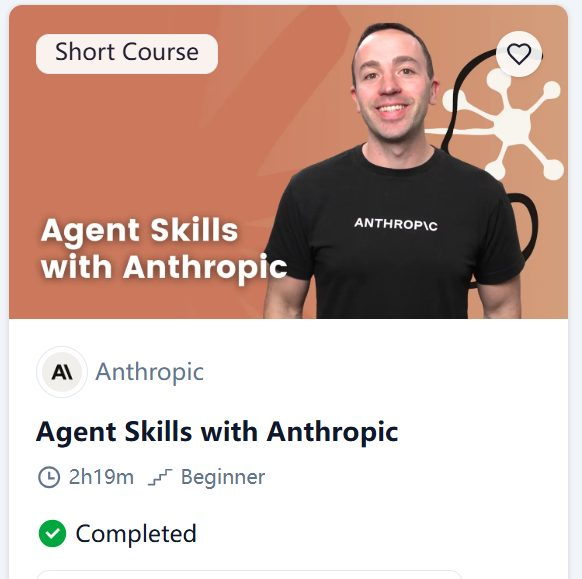

Learning Record 09
Agent Skills with Anthropic

网站：Agent Skills with Anthropic - DeepLearning.AI
收获
简单点说，就是看了一下skill可以怎么用，对skill,tool,subagent,mcp的一些概念理解理清了一点，然后其他就是一些直觉了。总体感觉还是偏应用，还是要自己用的多才能理解地更好。
某一章（Skills with Claude Code）的总结：
这一章主要就是用一个比较真实的application (CLI的 todos应用)为例，用claude code来写新的command，因为代码库略大，且技术栈比较复杂，所以个人理解不简单。也比较像一个真实的业务场景/应用开发，在加新功能的时候也有best practise，同时还有分析代码，生成测试等流程，视频中用了三个skill，adding-cli-command,generating-cli-tsets,reviewing-cli-command，然后又把后面两个skill分个两个subagent做，（看着别人过流程其实还是挺爽的，就感觉原来还能这样用，原来还能这样做）
在这个视频之上，关于这个系列的课程，感觉也还是有帮助，同样梳理了原来一些很模糊的该概念，比如skills , tools, MCP, subagents等，还有prebuilt Skills ,(但是关于Skills with th claude API 那节确实还是偏实践，其实整门课程都偏实践，因为不去用的话了解这些根本没用....毕竟是应用上的东西)，然后关于Skills with Claude Code这一节花了点时间也还是有点收获，好像无论什么时候问我收获了什么，我都会下意识地说，增加了直觉，也许是偷懒不想说清楚？不过确实是这样，给些直觉关键就是 skills， subagent，实际应用
—————————————————————————————————————————
阶段性感想
最近都在做一些有用的事情，主要是金种子的项目，做skill-evolve这个方面，所以找课程也偏向这一方面，但是一直做有用的事就感觉很累，而且其实我对这方面兴趣真不是很足。对于这个项目我也真不知道怎么做下去，就感觉没什么脚手架给我搭好，根本不知道从哪发力，也不知道现在这个方向到底行不行，只是先做着。可能要多关注skill-evolve相关的研究，可能确实在资源消耗和知识要求上没那么高。反正先做着吧，团队里有这么多人，大家一起努力总会有点进展的，反正熬也熬过来了。
所以明天我给自己布置一个任务，就是复现一下那个github上的小项目，我觉得关键更应该是主要skill怎么进化，建立一些直觉，跑一些真的数据集。有了这个经历之后再去做别的研究才知道在干什么，才可能知道乐趣在哪里
如果科研都这么困难，读研真是浪费生命，主要是我就像一个只会吃香蕉的猩猩
——————————————————————————————————————————